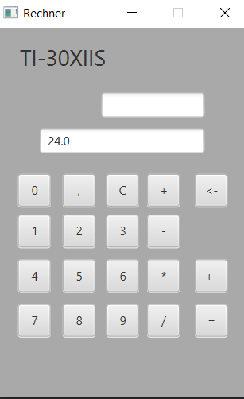
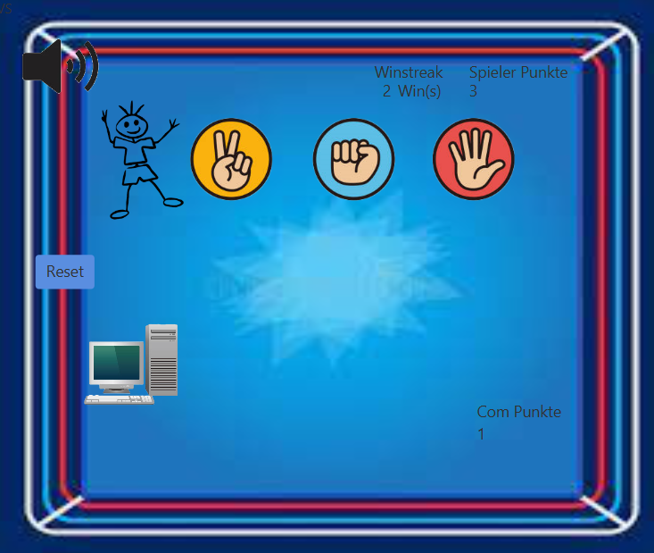
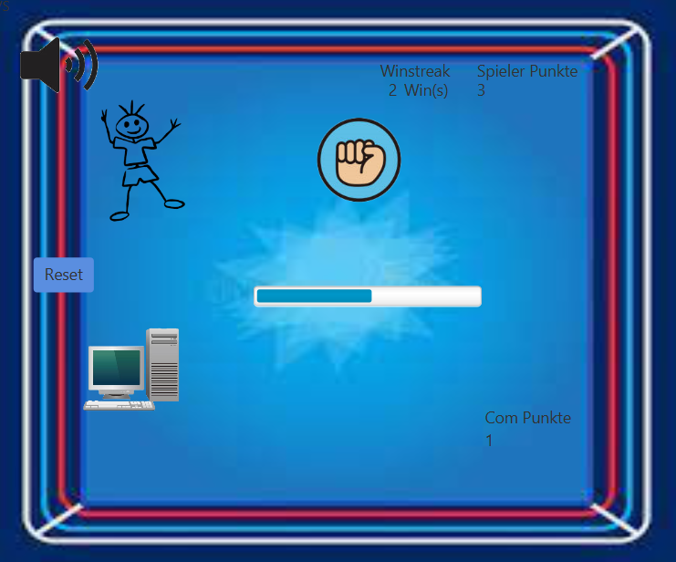
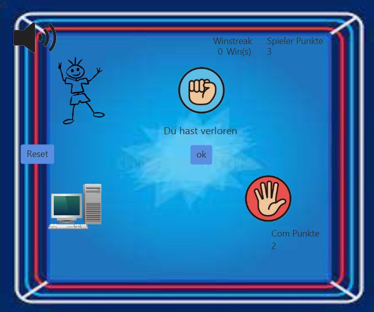
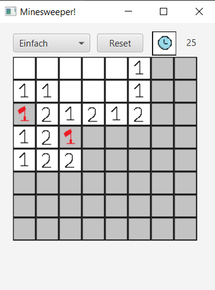
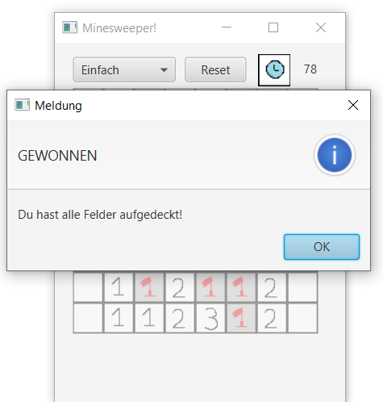
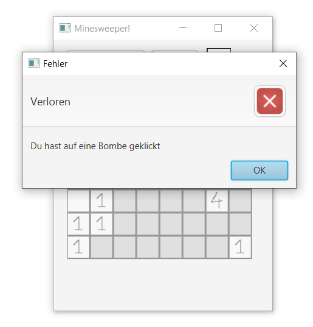
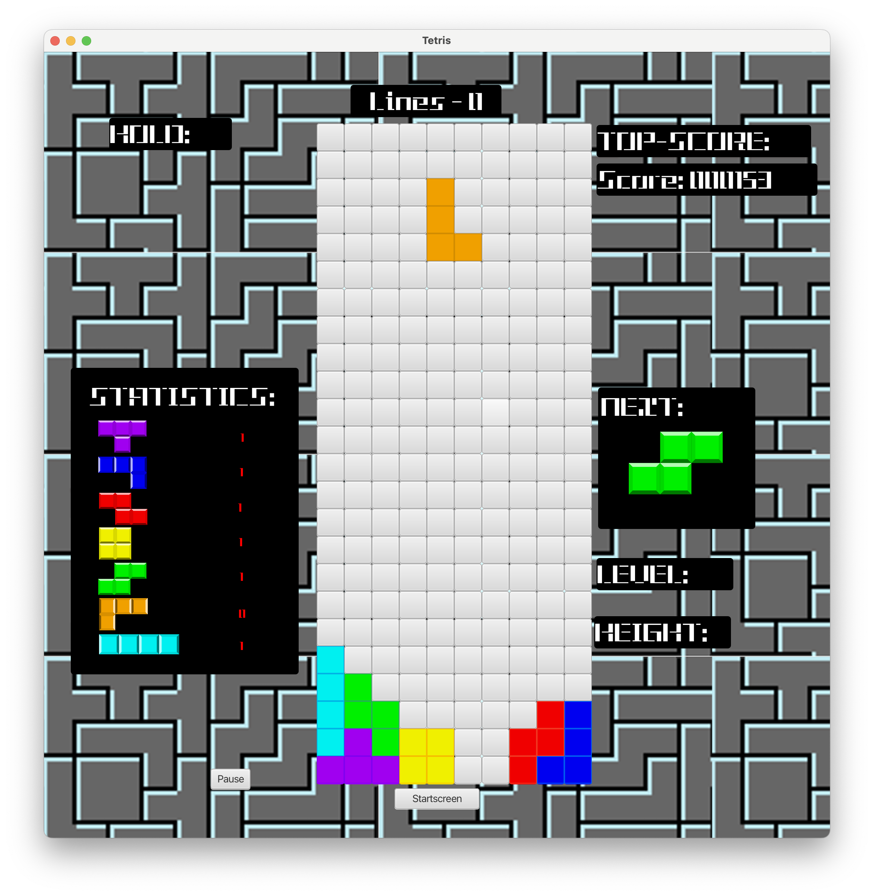
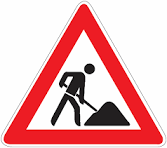
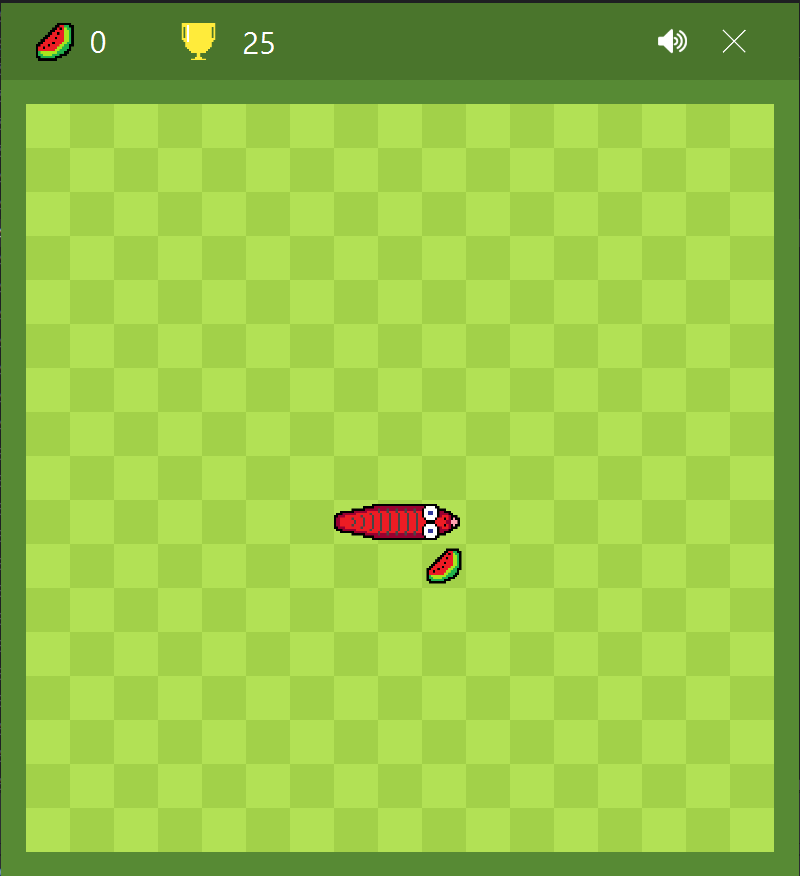

ITP - Projekte 3 - 4 Jg.
Created by Lukas Schlader
Was ist Itp?
Informationtechnische Projekte
Projektmanagemt + Programmierung
Projekte:
- Taschenrechner
- SchereSteinPapier
- Minesweeper
- Tetris
- Quiz
- Snake
Taschenrechner
Erstes Projekt
Projektdetails
Aufgabe:
Erstellen eines Taschenrechners mit den Grundrechnungsarten, Kommarechnung und weiteren
einfachen Features
Einlesen über Buttons und Tastatur
Framework: JavaFX
Management: Keines
Versionverwaltung: Keine
Teamgröße: 1
Unterscheidung von
7 & / und + & *, beim betätigen der shift taste
@FXML
public void KeyPressed(KeyEvent Event) {
System.out.println(Event.getText());
if (Event.isShiftDown()) {
if (Event.getText().equals("+")) calc("*");
else if (Event.getText().equals("7")) calc("/");
}
...
}
Schere Stein Papier
Erstes Spiel
Bekannt und Verständlich
Projektdetails
Aufgabe:
Erstellen eines SchereSteinPapier Spieles gegen einen Computer
Framework: JavaFX
Management: Keines
Versionverwaltung: Git/Github
Teamgröße: 2
Programmablauf
 Entscheidung der Computers
private void comEntscheiden(int spielerWahl) {
comWahl = (int) Math.round(Math.random() * 2);
if (spielerWahl == comWahl) {
gameMessageLBL.setText("Unentschieden");
} else if (spielerWahl == 0) {
if (comWahl == 1) {
spielerGewonnen(false);
} else {
spielerGewonnen(true);
}
...
}
Mineswepper
Klassiker der Videospielewelt

Projektdetails
Aufgabe:Erstellen eines Minesweeper-Spieles vgl der Windows-XP Version
Framework: JavaFX
Management: Keines
Versionverwaltung: Git/Github
Teamgröße: 1
Programmablauf
 Bomben Platzieren
private void bombenPlatzieren() {
bombenOrte = new int[anzahlBomben][2];
for (int i = 0; i < anzahlBomben; i++) {
do {
bombenOrte[i][0] = (int) (Math.random() * (reihen));
bombenOrte[i][1] = (int) (Math.random() * (spalten));
} while (bombenOrteBekommen(bombenOrte[i][0], bombenOrte[i][1], i));
}
}
}
Normales Projektmanagemnet
- Rollen: Auftraggeber, Projektleiter & Mitarbeiter
- Am Anfang alles Ausmachen (Arbeitspakte , TeilProjekte, ...)
- Dokumente: Projekthandbuch, Swot, Smart Ziel
- Änderungen spät nicht mehr möglich
Tetris
Weiter Klassiker der Videospielgeschichte
Projektdetails
Aufgabe:
Erstellen eines Tetris Spieles vgl der Nintendo-Originalversion
Framework: JavaFX
Management: Normales Projekmanagment
Versionverwaltung: Git/Github
Teamgröße: 3
Hauptschleife
@FXML
public void run() {
while (gameActive) {
try {
Thread.sleep(5);
} catch (InterruptedException e) {
}
gameLoop();
}
...
}
Scrum
- Agiles Projektmangement
- Rollen: Owner, Scrum Master, Mitarbeiter
- Jeder muss alles können
- Änderungen auch spät machbar
- Scrum Termine: Daily, Planning, Retro, Review
- Verwendung eines Trello-Boards:
- Product-Backlog
- Sprint-Backlog
- Doing
- Ready
- Done
Einblick in ein Trello-Board

Quiz
Erstes Scrum Projekt

(Leider nicht fertig geworden)
Projektdetails
Aufgabe:
Erstellen einer Anwendung vgl Quizlet/Kahoot
Framework: JavaFX
Management: Scrum
Versionverwaltung: Git/Github
Teamgröße: 4
Snake
Ein weiterer Klassiker
Projektdetails
Aufgabe:
Snake-Spiels vgl des Snakes von Google
Framework: JavaFX
Management: Scrum
Versionverwaltung: Git/Github
Teamgröße: 4
Dynamischs Einfügen der Bilder
if (schlongNaeherTail(posList).getPosX()-1 == snakePositionList.get(posList).getPosX()) {
...
}
...
}
TO BE CONTINUED...
FOLLOW ME ON GITHUB: lschlade